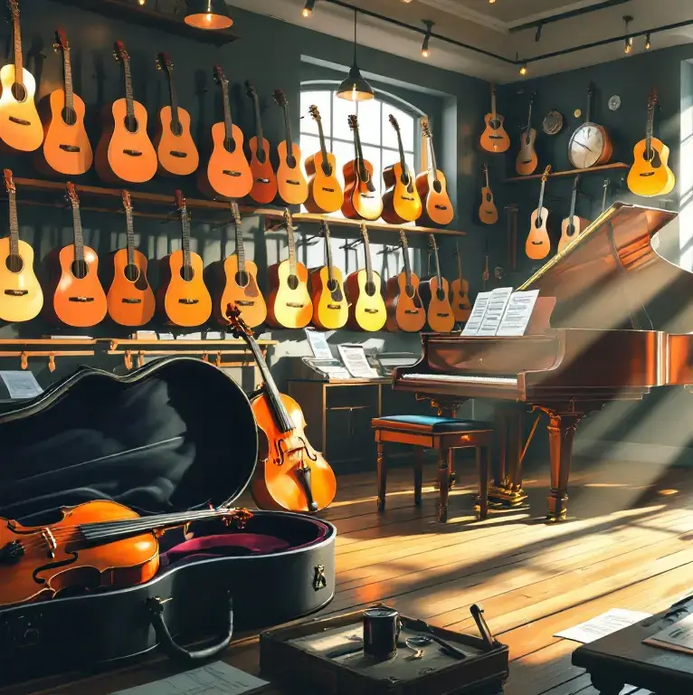

Sobre Naratorg
En Naratorg vivimos y respiramos música. Nuestro compromiso es ofrecerte los mejores instrumentos y el mejor servicio, porque sabemos que la música no solo se escucha, se siente. Descubre con nosotros el verdadero placer de crear. En Naratorg, nos apasiona conectar a los amantes de la música con la herramienta perfecta para expresarse sin límites. Nuestro objetivo es brindarte una experiencia de compra personalizada y una asesoría experta para que puedas encontrar el instrumento que mejor se adapte a tus necesidades y estilo de música.
Entrega impecable
Nuestro equipo cuida cada detalle para que tu instrumento llegue en perfectas condiciones. Desde el embalaje hasta la entrega, nos aseguramos de que todo sea perfecto. Nuestros envíos son completamente rastreables, para que puedas estar seguro de que tu instrumento estará en tus manos en el momento previsto. Y, por si fuera poco, ofrecemos una garantía de satisfacción para que puedas tener la tranquilidad de que has elegido lo mejor.
01
Explora nuestro catálogo
Desde clásicos hasta lo último en tecnología musical, nuestra selección está llena de opciones que te inspirarán. Encuentra el instrumento que habla a tu corazón.
02
Haz tu elección
Con solo unos clics, tu próximo instrumento estará reservado. Disfruta de un proceso rápido y sin complicaciones, pensado para que te concentres en lo importante: la música.
03
Sigue tu pedido
Mantente informado en todo momento. Con nuestro sistema de seguimiento, sabrás exactamente cuándo podrás comenzar a tocar tu nuevo instrumento.
04
Recíbelo y comienza
Tu instrumento llega listo para la acción. Prepárate para explorar nuevas melodías y hacer que cada nota cuente. Naratorg está contigo en cada paso del camino.
Naratorg: Tu compañero en cada nota
Bienvenido a Naratorg, donde cada instrumento es una llave para crear magia sonora. Descubre una experiencia que conecta tu pasión con melodías únicas. Desde principiantes hasta músicos avanzados, tenemos justo lo que necesitas para dar vida a tus canciones.
Paquete Básico
Perfecto para quienes inician su viaje musical.
25/día
- Instrumentos con historia (y mucho corazón)
- Instrucciones claras para cada nota
- Soporte básico para tus primeros acordes
- Guitarras, teclados y más, listos para brillar contigo
Paquete Avanzado
Para quienes buscan más precisión y calidad.
50/día
- Instrumentos con ajustes profesionales
- Accesorios para perfeccionar tu experiencia
- Soporte técnico en caso de cualquier duda
- Sonido impecable en cada nota
Paquete Virtuoso
Diseñado para los que exigen excelencia en cada acorde.
90/día
- Instrumentos afinados al detalle
- Presentación de lujo que inspira creatividad
- Garantía de una experiencia musical inolvidable
Lo que opinan nuestros músicos
Atrévete a vivir la experiencia Naratorg. Cada instrumento cuenta una historia, y tú eres el protagonista. Desde una guitarra que ha vibrado en escenarios hasta un piano que resuena en salas de concierto, cada pieza está lista para ser parte de tu viaje musical.
“Gracias a Naratorg, mi guitarra no solo suena bien, ¡suena espectacular!”
“Naratorg hizo que aprender piano fuera una experiencia inolvidable.”
“Los instrumentos de Naratorg tienen alma. Es un placer tocarlos.”
“Con Naratorg, cada práctica se siente como un concierto.”
“Nunca pensé que encontraría instrumentos tan únicos y especiales.”
“Naratorg entiende lo que un músico necesita. ¡Totalmente recomendado!”
“Calidad, historia y pasión en cada instrumento. Naratorg es incomparable.”
“Mi música ha alcanzado otro nivel gracias a Naratorg.”
Empieza tu próxima melodía
Nos enorgullece inspirar a músicos que buscan más que un simple instrumento. En Naratorg, cada instrumento tiene una historia que contar, esperando a ser descubierta por ti.
En Naratorg, no vendemos instrumentos, ofrecemos conexiones musicales. Cada pieza está cargada de potencial creativo, esperando ser desbloqueado por ti. Desde el primer contacto con las cuerdas hasta el último acorde, queremos ser parte de tu viaje musical.
¿Buscas una experiencia musical sin igual? En Naratorg, hacemos que cada nota cuente. Nuestra misión es acompañarte en cada melodía, brindándote las herramientas para liberar tu creatividad y explorar nuevas fronteras sonoras.
En Naratorg, creemos que la música es un viaje, no un destino. Y queremos ser tus guías en cada paso del camino. No importa si eres principiante o profesional, en Naratorg, te damos las herramientas para que puedas crear al máximo de tus posibilidades.

¡Deja que Naratorg sea el comienzo de tu gran obra musical!
En Naratorg, entendemos que cada músico tiene una visión única. Por eso, ofrecemos una amplia gama de instrumentos de alta calidad, seleccionados cuidadosamente para inspirar a cada artista, ya seas principiante o un profesional experimentado.
Nuestro compromiso con la excelencia se refleja en cada detalle. Desde el sonido inigualable de nuestros instrumentos hasta la durabilidad que garantiza años de música, trabajamos para que cada cliente se lleve mucho más que un producto: se lleve una experiencia transformadora.
Además, contamos con un equipo de expertos apasionados por la música, listos para ayudarte a encontrar el instrumento perfecto para ti. Ya sea que busques un ajuste personalizado o asesoramiento profesional, estamos aquí para acompañarte en tu camino musical.
Descubre en Naratorg un espacio donde la innovación y la tradición se encuentran. Nos enorgullece ser más que una tienda: somos un puente hacia la creación, donde cada nota cuenta y cada melodía es posible.